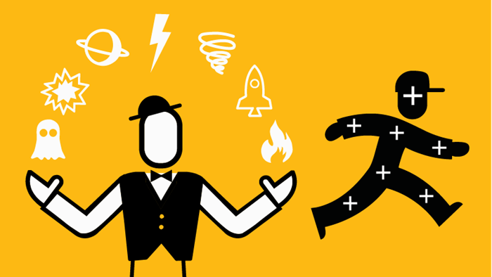
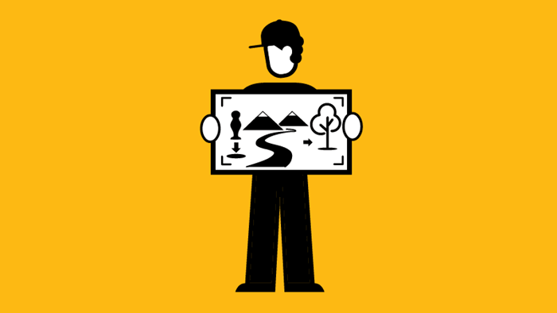

Sachin Tandon works to help businesses in the “Media” & “Technology” sectors grow, prosper, and thrive! He does this currently through the application of a variety of technologies (ETL, Analytics, and Web based), so businesses can get the data and insight they need, to make better, and more-effective business decisions.
Sachin has been fortunate enough in his career, so far, to have worked with people across a range of different countries, including the U.K., U.S.A., Japan, India, and Middle East, working with groups of incredible business professionals!
In fact, after being inspired from his time learning Japanese, at the Massachusetts Institute of Technology, during his Master’s Degree, in 2007, Sachin went to Tokyo, Japan, to work for the Technology company, Hitachi Digital to help them solve a challenging Manufacturing Engineering problem. When he was there, he also bought his first Digital SLR Camera from the electronics Akihabara district, so he could practice his Photography, whilst travelling across the country, to deepen his culturing understanding of Japanese food, history and tradition.
After completing his Master Degree in Engineering from the University of Cambridge, U.K (where he was also President of the College Film Society), Sachin then set out to understand and learn more about Finance, working at the Professional Services company, PwC, in London, U.K. where, as he worked for clients during the week, he also studied for and obtained his C.A. (and successfully became a Chartered Accountant!)
After doing this, Sachin then went ahead to pursue a self-funded MBA, from Manchester Business School, U.K., to learn more widely about business and get a better, more practical understanding of areas such as: Marketing, Human Resources, Innovation & Entrepreneurship, Business Strategy, Venture Capital, and International Commerce.
After his MBA, Sachin then decided to start his own venture, StarTech Enterprises - a Ltd Co. vehicle through which he works passionately to help “Media” & “Technology” companies grow and develop themselves, so they can streamline their operations, strengthen their strategic capabilities, and ultimately, make more informed, and better business decisions. He does this, currently, by providing input, challenge and encouragement to companies, individuals, and the leaders within them, to pilot new ideas, products, and technologies - so they can experiment with new things, re-invent themselves a little, and push the boundaries a little further!
Sachin has now, through his career, been able to work for companies such as: BBC Media, Hitachi Digital, Jaguar Land Rover, WPP (Wunderman Thompson, Hogarth, Geometry), The Omnicom Media Group - in Media, Entertainment, & Technology - and then Diageo Corporate Ventures, The Landmark Group, Happy Ratio, and J L Rohatgi Memorial Eye Hospital - in Retail, Food, Drinks, and Medicine.
And in so doing, Sachin has been able to obtain extensive business experience across Media, Technology, Marketing, Retail, Finance, Strategy, Education and Travel.
Having established an extensive network of contacts, Sachin’s primary focus, now, is on giving his clients the best possible insights, through lasting and practical solutions, so they can continue to flourish and expand!
Below is a summary of academic and business qualifications Sachin has studied and worked for during his career.
EDUCATION:
University of Cambridge, Gonville & Caius, U.K.
MEng, General Engineering / Manufacturing Engineering
Massachusetts Institute of Technology (M.I.T.), U.S.A.
BEng, Engineering / Manufacturing
Manchester Business School, U.K.
M.B.A. (Master of Business Administration)
Institute of Chartered Accountants England & Wales, U.K.
A.C.A (ICAEW)

Day to day, Sachin works to:
Continually try to develop and refine the venture’s service offering, whilst networking & building relationships with key organisations in the “Media” & “Technology” sectors, surveying and understanding the needs of the market
Pro-actively meet with potential clients in these sectors to build an extensive network of contacts, and better understand how effective solutions can be developed to fulfil their most pressing issues and objectives
Conducting cross-disciplinary research, across areas of technology, marketing, advertising, business development, human resource management, advanced analytics, sustainability, and financing - in order to keep pace with constantly evolving customer needs
When he is not helping “Media” & “Technology” companies become better at what they do, Sachin continues to lead a bright and colorful life, having enjoyed his recent travels to remote parts of Southern Asia, the Far East, Southern Africa, and Europe - using the opportunity to absorb new cultures, meet new people, and really savour the diversity of life!
When not working, you can find him playing tennis, watching cricket, Formula 1 motor sport, or following the progress of his favourite football team - Mancheser United (His parents lived not very far from Old Trafford, a few years before Sachin landed on Planet Earth!)
Sachin continues to strongly pursue his passions for film, media, entertainment, engineering, and technology, reading books on the topic (like: The Wired, M.I.T. Tech Review, Total Film Magazine, and National Geographic !), whilst also celebrating the remarkable things other people have done in the field - in addition to participating in a wide range of cultural and gastronomic activities - when he gets the time!
So, life, all round, is quite busy!
